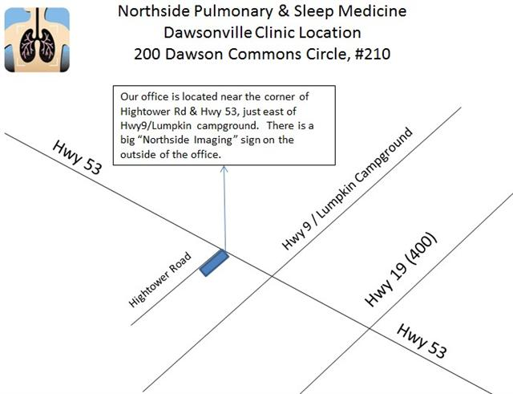

Dawsonville Clinic
Our Dawsonville Clinic is located at the corner of Hwy 53 & Hightower Rd and is accessible from Hwy 53. A big sign saying “Northside Imaging” is setup outside the medical office complex and is visible from Hwy 53. Our office is in Suite 210.
Click on map below to be taken to google maps for directions from your location.
